Início/Conceitos/9 · Defesa em profundidade e decisão
conceito 9 · arquitetura de decisãoArquitetura de defesa em profundidade e decisão
Como eu junto as camadas independentes e decido sem apagar código legítimo: três camadas que não dependem uma da outra, severidade por corroboração (dois sinais independentes), quarentena reversível em vez de deleção, e a ideia do coeficiente de proteção como soma.
Três camadas independentes: pretool (write-time), daemon (filesystem) e eBPF (backstop de kernel no Linux). A decisão usa corroboração: um sinal confirmatório (Tier A) basta; sinais heurísticos (Tier B) precisam de dois tipos distintos para confirmar, senão ficam como Suspicious (logado, mantido). Quando confirma, o daemon move para a quarentena (reversível), não deleta. E a proteção total é a soma das camadas, o coeficiente, não a contagem de uma feature.

Do zero: defense-in-depth e modelo de confiança
Defesa em profundidade é não depender de uma só barreira: se uma falha, a próxima ainda contém. Corroboração é exigir mais de uma evidência independente antes de uma ação cara: na medicina, dois exames; aqui, dois métodos de detecção distintos. Reversibilidade é preferir a ação que dá para desfazer: bloquear uma escrita ou mover um arquivo se desfaz; deletar não. Esses três princípios existem para resolver a tensão central de uma ferramenta de segurança: ser dura com o ataque sem destruir o trabalho legítimo do usuário.
Por que importa
O custo de errar não é simétrico. Deixar passar um ataque é ruim; apagar o código legítimo do usuário por um falso-positivo é, muitas vezes, pior, porque quebra a confiança e destrói trabalho. Então eu calibrei a decisão para que só a evidência forte (confirmatória) aja sozinha, e a evidência fraca precise de companhia. E quando ajo, ajo de forma reversível. Isso é o que separa uma ferramenta que as pessoas mantêm ligada de uma que elas desligam no primeiro susto.
Como se correlaciona
As camadas independentes do grupo 6 e o backstop de kernel do grupo 2 são as três barreiras; a corroboração usa a taxonomia de sinais que os visitors e o scanner emitem; e a coexistência fonte+sink do grupo 8 é corroboração embutida num único visitor. O coeficiente é o nome que dou para a soma de tudo isso, e é o que a matriz de cobertura recorta por camada.
Como o Nemesis aplica
A decisão é em dois tiers. Tier A (confirmatório) age sozinho; Tier B (corroborante) conta tipos distintos:
📄 .nemesis/nemesis-defender/src/lib.rs:382-443 · Tier A/B e compute_severityconst CONFIRMATORY_VISITORS: &[&str] = &[ // Tier A: 1 hit confirma
"decode_exec", "reverse_shell", "exfil_chain", "taint_tracker",
"unicode_bidi", "ide_config_poisoning", "nemesis_bypass", /* ... */ ];
const CORROBORATING_VISITORS: &[&str] = &[ // Tier B: heurístico, sujeito a FP
"prompt_injection", "self_clean", "time_gated", "high_entropy", /* ... */ ];
// 0 → Clean · 1 tipo → Suspicious (loga, mantém) · 2+ tipos → MaliciousO daemon é security-only e nunca trata qualidade, justamente porque a ação dele é irreversível por natureza (ele atua no arquivo já no disco):
📄 .nemesis/nemesis-defender/src/lib.rs:216-232 · daemon security-only// regras de QUALIDADE NUNCA chegam ao daemon: qualidade ⇒ bloquear escrita
// (reversível), JAMAIS deletar arquivo (irreversível). O daemon é SECURITY-ONLY.E a contenção confirmada é movimento reversível, com PENDING travando a sessão até o humano decidir restaurar ou expurgar:
📄 .nemesis/nemesis-defender/src/quarantine.rs:1-11 · quarentena reversível//! MOVE para .nemesis/quarantine/ e retém para revisão humana (não deleta).
//! O humano decide: restore (falso-positivo) ou purge (expurga de vez).No Linux, o eBPF é a terceira camada, independente do hook: o pretool só o garante no ar, mas a decisão de kernel não depende do pretool estar conectado.
📄 .nemesis/hooks/nemesis-pretool-check-unix.rs:945-981 · eBPF como backstopNuances e armadilhas
- Contar tipos distintos (não hits) é deliberado: várias ocorrências da mesma causa num arquivo não devem escalar para Malicious. Métodos independentes concordando é que confirma.
- "Independente" é o ponto: se as três camadas dependessem da mesma condição, não seriam profundidade, seriam a mesma barreira repintada. eBPF no kernel não depende do hook; o daemon não depende da IDE chamar nada.
- Suspicious não é "deixa passar": é logado e mantido para revisão. A reversibilidade vale também aqui, eu prefiro registrar e observar a deletar na dúvida.
Auto-checagem
Por que dois sinais distintos para confirmar (em vez de um heurístico só)?
Porque um heurístico isolado tem taxa de falso-positivo; exigir dois métodos independentes concordando reduz o risco de apagar código legítimo. Sinal confirmatório (determinístico ou multi-condição) é a exceção que age sozinho.
Por que quarentena em vez de deletar?
Porque mover é reversível e preserva a evidência para revisão humana; deletar é irreversível. O humano decide restaurar (se foi falso-positivo) ou expurgar.
O que é o coeficiente de proteção?
A soma das camadas independentes e suas taxonomias (denylist embutida, scanner, visitors, denylists de comando, eBPF). É a medida real de cobertura, e por isso ela não se reduz ao número de visitors.
Para ir além
- NIST, defense in depth.
- OWASP Proactive Controls.
- MITRE ATT&CK como taxonomia de técnicas.
Citações verificadas contra o repositório. Voltar ao índice.